Sessions and Quota — implementation proof
The fresh 32×24 build passed its 42-image / 12-negative journey and independent visual recheck. The six-size gallery is ready; earlier source-bound captures and failures remain preserved below. Actual iPhone hardware testing is not required: narrow width and short height are the owner-approved proxy. Current Filters, pending/error states, live resize, Sessions/provider/two-machine proof, fresh-checkout and current-head CI remain separate.
Verification Design defines the deciding observations for the component requirements and the later Claude/Cursor obligations. Owner feedback tracks completion. Interactive proposal explains the intended design.
Current Sessions: 120×36
All 20 original Sessions captures are now in the shared screenshot gallery: Browse, Details, New, Fork, Filters, Help and inline searchable choices. The tour passed 20 image checks and three wrong-image controls. An independent verifier opened and hash-checked every original, with no confirmed visible P0–P3 finding in this bounded set. Child exit 0, provider requests 0, state/secrets unchanged and owned cleanup complete.
Actual renderer: compiled fixture harness 144801f2…, synthetic typed records through real UI/input/rendering. This is not public-client or provider-action proof. The combined run failed at the following Quota reader; ten later tours remain unrun. Narrow/short Sessions and newer Quota return/spacing pictures remain pending. Exact current evidence · Independent review · Current receipt.
Latest 32×24: narrow readability defect closed
The newly compiled build passed all 42 positive image checks and 12 wrong-image controls in 69.24 seconds. The child exited 0, fixture external requests/writes were zero, and owned cleanup passed. A separate reviewer personally opened and hash-checked all 42 originals: P3-32-1 is CLOSED, with no confirmed new visible P0–P3 in this corpus. Root opened Browse, selected-Claude and Credit usage.
The narrow row now uses whole “Unknown” beneath Weekly pace. Full unavailable/collecting reasons remain in Details. Names, providers, the three information groups and existing features remain. The latest full CLI command passed 571 tests, failed 0 and ignored 7; all 11 copied-default checks, 39 affected tests and strict quality checks passed. Independent source review of the five-file repair is clear.
Open the focused Quota gallery · Exact source/build/image evidence and limits · Independent visual closure · Independent code review
Inspect all 42 current 32×24 originals


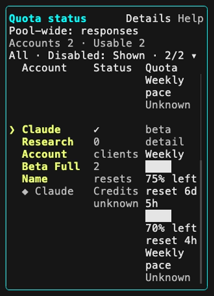


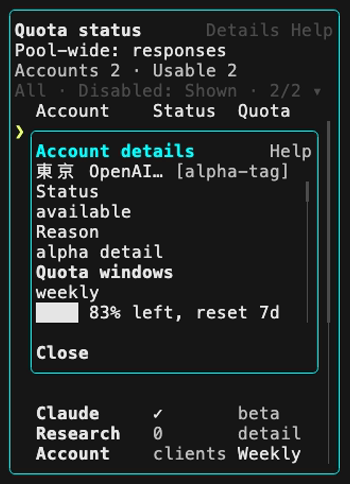

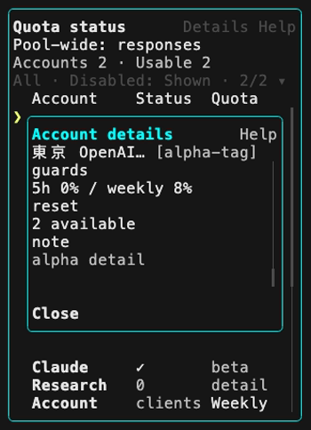

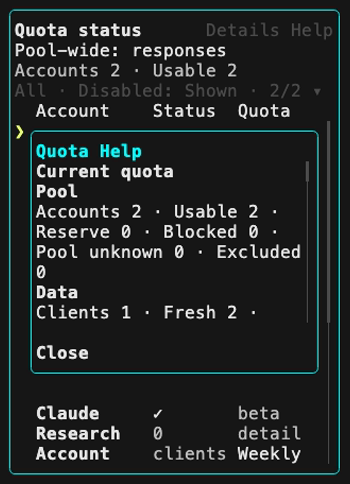

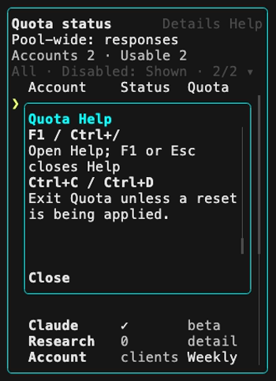


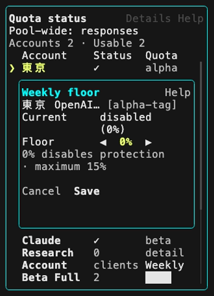

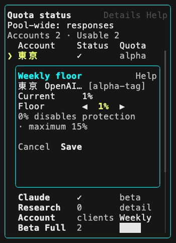

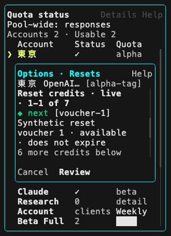


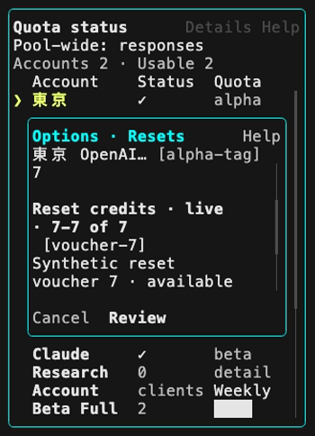

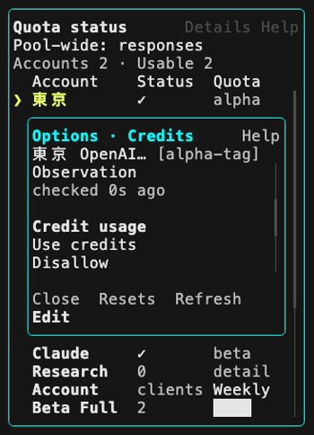


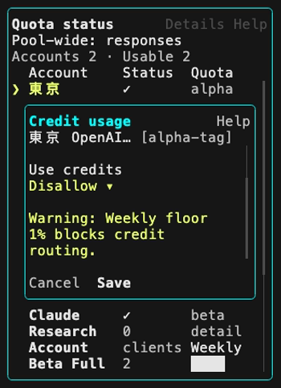

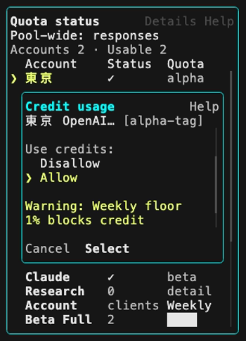

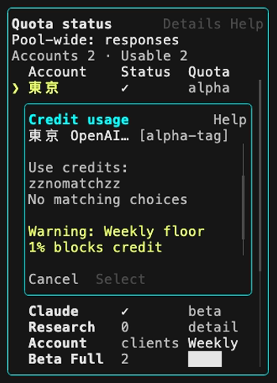


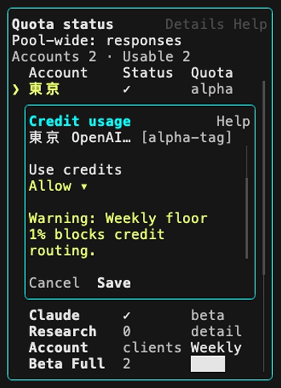


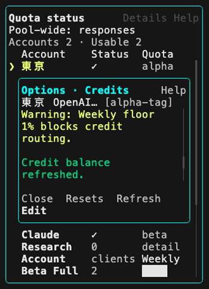

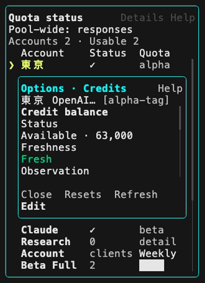


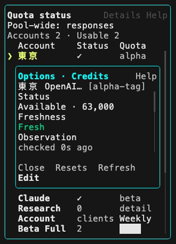

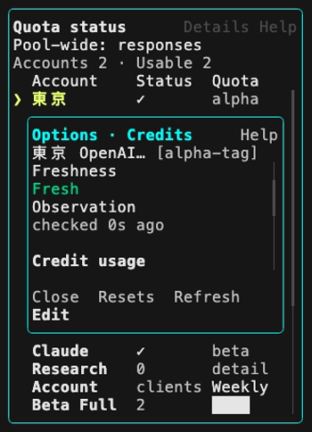

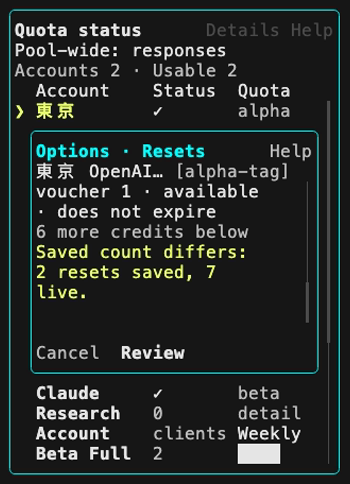

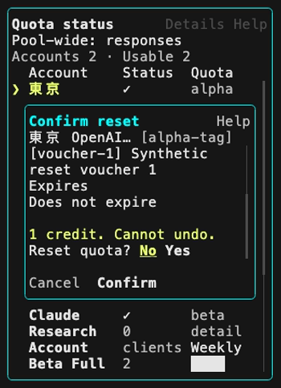

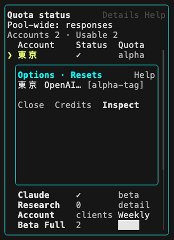

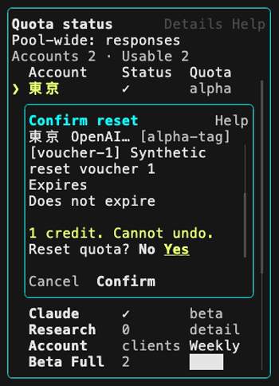

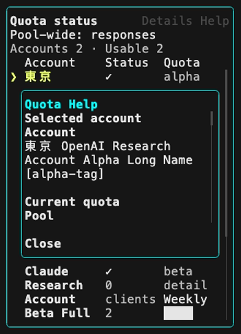

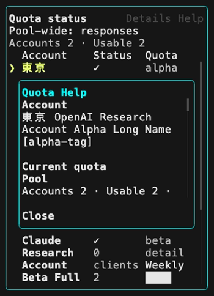


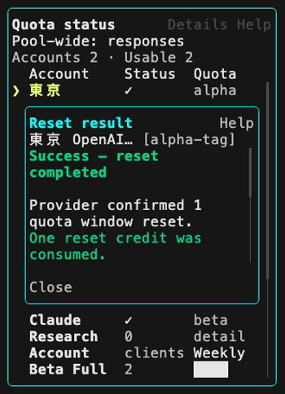

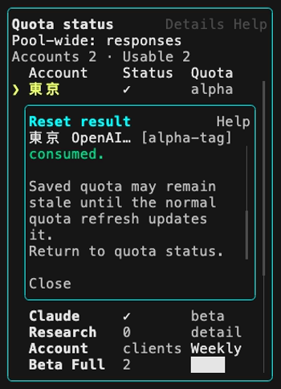

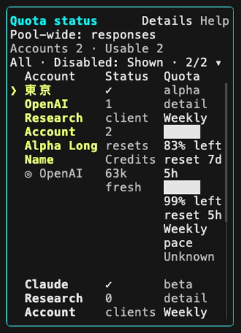
What the evidence establishes
| Target | Behavior and visual observation | Evidence |
|---|---|---|
| 48×24 | 42 pictures reviewed independently; both targeted readability findings closed. Automatic Floor recognition failed. | Pictures and review |
| 48×12 | 42 positive /12 wrong-image checks pass; all42 reviewed independently, no confirmed visible P0–P3. | Short-height journey |
| 32×24 | Latest 593: 42 / 12 passed and independent P3 closure. The superseded e873 finding remains archived. | Latest narrow proof · Superseded finding |
| 40×24 | All42 reviewed; no confirmed visible P0–P3. Automatic Floor recognition failed. | Review, correction and failed run |
| 76×30 / 120×36 | 84 originals independently reviewed; no confirmed visible P0–P3. Automatic selected-name recognition failed. | 76-column review · 120-column review |
| Code / developer workflow | CLI scope565 passed /0 failed /7 ignored across11 targets; strict quality checks and nine default-component gates pass. Independent test-helper P2 repaired and rechecked with37 affected passing tests. | Exact source, tests and review |
Tests, visual judgement and runtime results are separate claims. A desktop cell grid is not an actual iPhone-terminal observation. The full account, provider, numeric data, three information groups and features remain obligations.
Current compiled examples
The full names/providers and three information groups are retained. Credit usage separates Balance, the editable value, warning and actions. Confirmation keeps the account, consumed credit, irreversible warning and explicit choice together. These use synthetic fixture data through the compiled TUI; they are not HTML mockups or live-provider proof.


Independent code review of the capture correction keeps synchronization distinct from image, input, effect and cleanup proof. The earlier pre-export 76-column failure remains failed with unknown child/effects; these later exported images belong to the qualified successor.
Corrected build: first 42 compiled originals
The new Browse picture addresses both accepted readability findings. “2 resets”, “83% left” and “reset 7d” now stay together when they fit. The empty unavailable pace graphic is gone; the words and real quota bars remain. Account names, provider labels and the Account / Status / Quota grouping remain. Root personally opened the decisive new originals. The independent UX reviewer personally opened and hash-checked all 42 new originals: both targeted findings are VERIFIED CLOSED visually at this grid, with no new confirmed P0–P3 visible issue in this corpus.
A separate retained-image recheck subsequently supported41 positive properties, retained the known Floor strict-anchor rejection and rejected all12 wrong-image controls. It read the same unchanged images with the same checker; it does not rewrite the failed runtime history. Separate image-check record.
This run failed its automatic Floor identity check. It exported all 42 originals and the child exited 0 with zero fixture external requests/writes. Twelve positive image checks passed, then the strict Floor anchor rejected its native tag reading. The remaining 29 positive / 12 wrong-image checks were unrun; there is no Normal receipt. Cleanup found no owned processes or private profile. Known OCR limitations never become automatic passes.

Code evidence: composed CLI scope: 565 passed, 0 failed, 7 ignored across 11 targets; Clippy/format/size exit 0; nine checks pass against the actual copied default component. The original 90-second whole-command timeout remains failed. The independent code review found a P2 in a test helper’s modal crop. The causal repair and affected re-review have now VERIFIED CLOSED that finding: final 37 affected tests and strict quality checks pass. This later test-helper result is bound separately from the e873 binaries and earlier test runs. These results do not establish device, provider, final UX or PR readiness.
Complete independent 42-image UX assessment and scoped closures. Other terminal sizes, pending/error/resize, actual iPhone, behavioral and delivery gates remain separate.
Exact image/source/build/receipt evidence and limits · Independent affected code review · Failed run · Cleanup.
Independent closure of the test-helper P2 · Exact causal failures, repaired source and passing focused/quality evidence.
Component SHA256: e873c3a6873eb4852e1d7bc12455989de9067fe26f354783f134ecb7dda23228. The older galleries below retain their original build identities.
Inspect all 42 new compiled originals at 48×24


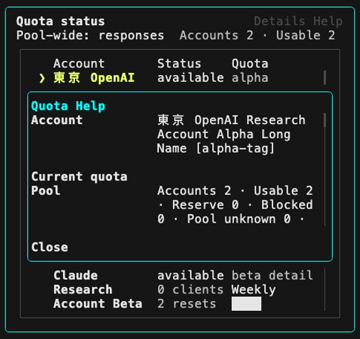


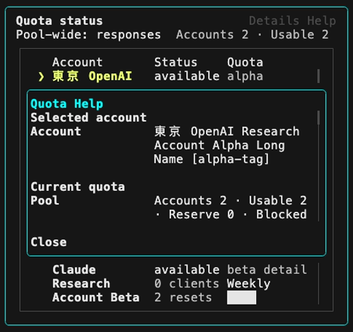

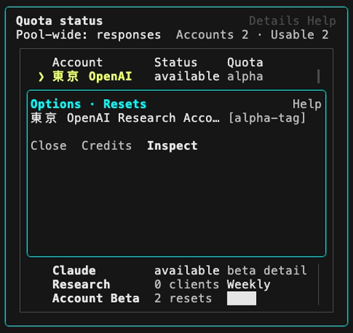

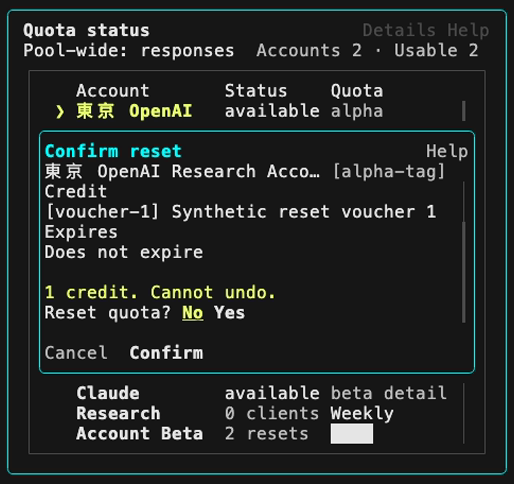


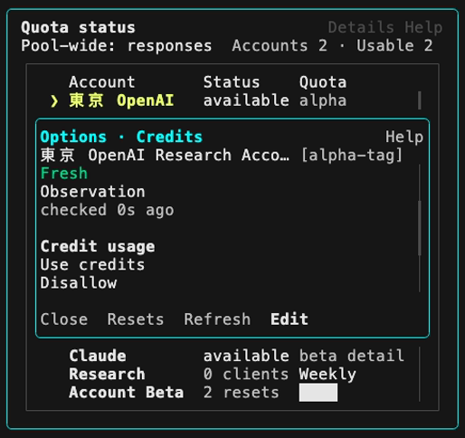

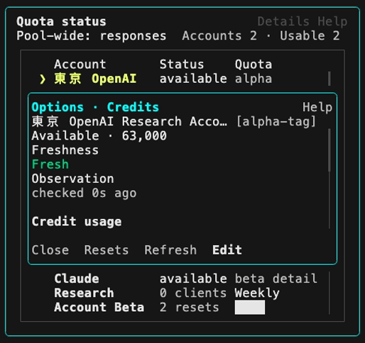


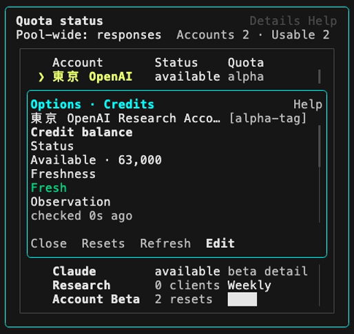


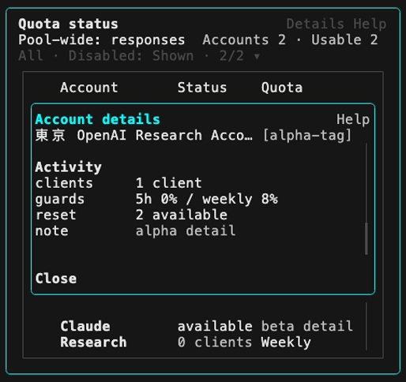

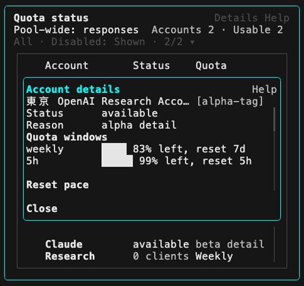


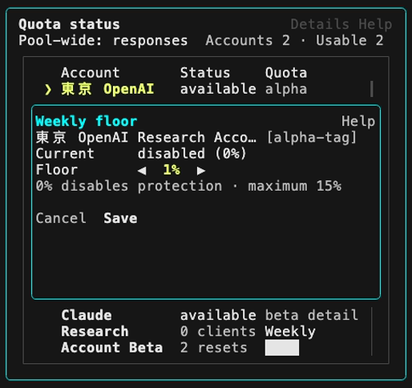


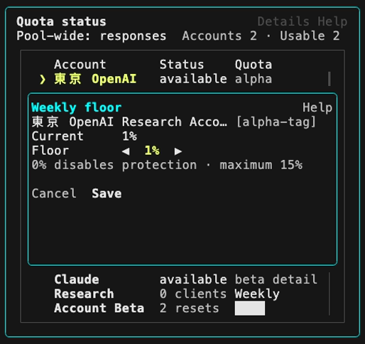

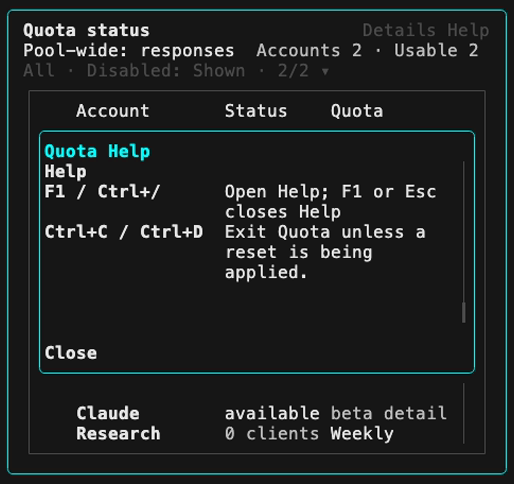

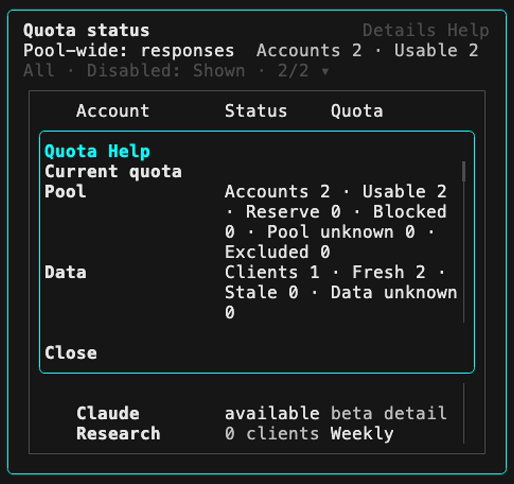

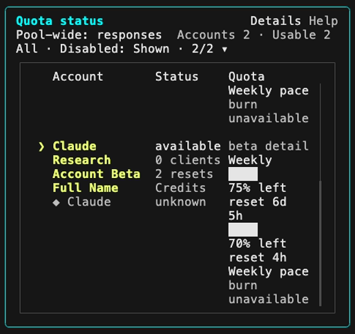

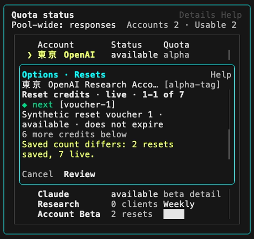

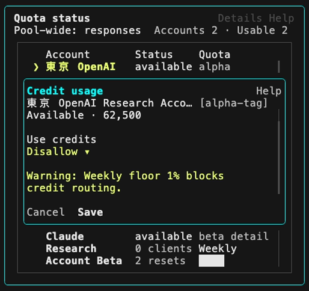


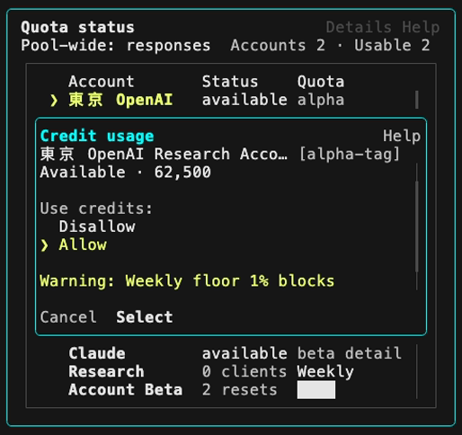

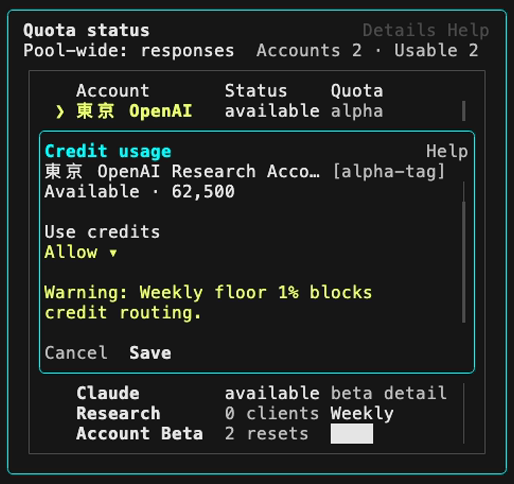

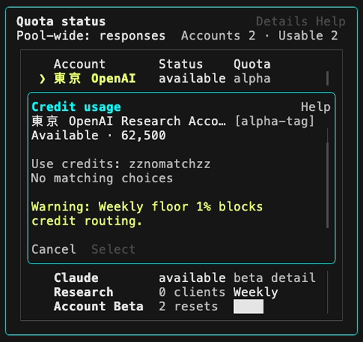


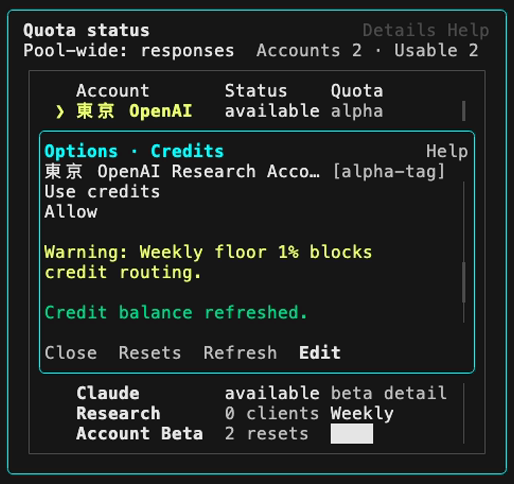


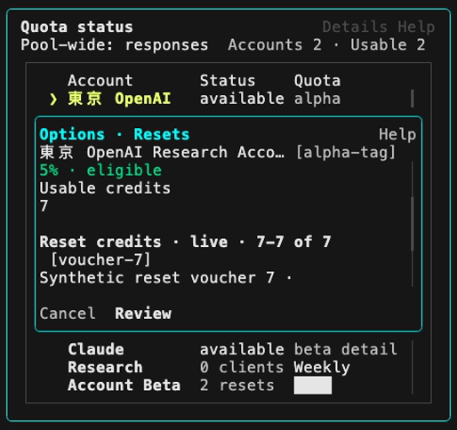

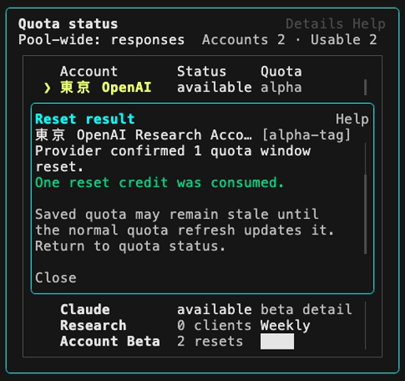

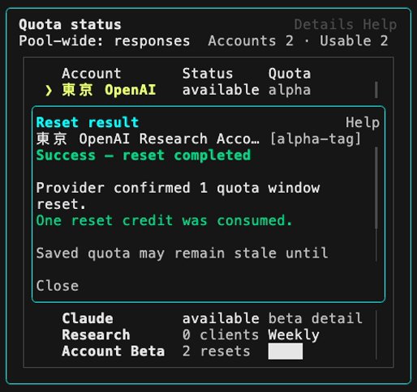


48×12: passed journey and independent visual review
All 42 positive image properties and 12 wrong-image checks passed. Wrapper, driver and child exited 0; zero fixture requests/writes were recorded, and all 59 recorded processes plus the private profile were absent. The independent observer personally opened and hash-checked every original, with no confirmed P0–P3 visible issue in this corpus. Root inspected the decisive credit, short-quota, pace and Options views.
Complete independent 48×12 report · Execution · Cleanup.
Complete intermediate Help counts, confirmation metadata and result-middle guidance are not visible in these poses and still need their separate observations. This terminal grid is not actual iPhone proof. Other sizes and final behavioral/delivery gates remain open.
Inspect all 42 new 48×12 originals


Superseded e873 32×24: original readability finding
The current 593 correction is verified above. This section preserves the earlier finding and its exact original evidence.
The bounded journey passed 42 positive and 12 wrong-image checks, with child exit 0, zero fixture external requests/writes and independent cleanup. The independent reviewer personally opened and hash-checked all 42 originals and found one visible P3: the unavailable pace word splits into “unavaila” / “ble”. Root confirmed it in the original. The repair and fresh proof remain open. Vertically stacked client/reset counts remain attributable and are an explicit physical-width tradeoff.
Full independent 42-image review · Actual execution · Independent cleanup
Inspect all 42 original 32×24 pictures


40×24: Visual review clear; automatic Floor check failed
All 42 originals were exported, but the automatic run failed after 12 positive checks: native text recognition merged the Cancel and Save action regions and rejected the Floor value anchor. Child exit 0, zero fixture external requests/writes and cleanup were recorded. Later checks were unrun; there is no Normal receipt. The independent reviewer opened and hash-checked every original. Root challenged an initial tag-clipping claim; the reviewer reopened the exact originals and withdrew it. Both complete literal account tags are visible. No confirmed P0–P3 visual defect remains in this set. This visual judgement does not turn the failed automatic run into a pass.
Full independent 42-image review · Actual execution · Independent cleanup
Inspect all 42 original 40×24 pictures


76×30: independent visual review clear
All 42 originals were personally opened and independently hashed. No confirmed visible P0–P3 issue remains in this exact set. The automatic run failed after the first Browse check: its reader rejected the complete visible selected account name in the next image. Later 40 positive checks and all 12 wrong-image controls were unrun; there is no Normal receipt. Child exit 0, zero fixture external requests/writes and cleanup are recorded. Manual appearance review never rewrites that failed run.
Full independent 42-image assessment · Failed execution · Cleanup and effects · Source/build/viewport
Inspect all 42 original 76×30 pictures


120×36: independent visual review clear
All 42 originals were personally opened and independently hashed. No confirmed visible P0–P3 issue remains in this exact set. The automatic run failed after the first Browse check: its reader rejected the complete visible selected account name in the next image. Later 40 positive checks and all 12 wrong-image controls were unrun; there is no Normal receipt. Child exit 0, zero fixture external requests/writes and cleanup are recorded. Manual appearance review never rewrites that failed run.
Full independent 42-image assessment · Failed execution · Cleanup and effects · Source/build/viewport
Inspect all 42 original 120×36 pictures


Observed build: reviewed screenshots and explicit limits
The 48×12 and 32×24 Normal journeys pass their bounded checks. Each has 42 compiled screenshots and 11 wrong-image controls. A separate cold UX observer personally opened every original in each set and confirmed no P0–P3 visible defect. The previously accepted short-height Options P2 is visually closed. This is evidence for these two Normal journeys, not a claim that all Quota or the PR is done.
| Question | Observed evidence | Limit |
|---|---|---|
| Does the UI read clearly? | 168/168 originals opened by the runtime Verifier and independent observers. The latest review found two accepted P3 readability issues; correction and new proof remain open. | Four grids, one renderer/theme, Normal states only. The 40×24 and 48×24 automatic runs remain failed; the latest UX review has two open P3 findings. |
| Does the compiled flow work? | 42 scene checks and 11 wrong-image controls per grid; wrapper, driver and child exit 0; zero fixture external requests or persisted writes; all 58 recorded processes absent per run. | Synthetic external ports/model. No live provider or storage acceptance. |
| Is the code checked? | Full CLI: 560 passed, 0 failed, 7 ignored; strict Clippy, format and size checks exit 0. Nine exact tests also pass against the default compiled artifact. An independent 11-file correction review reports no confirmed P0–P3 defect. | The review predates additive observation assertions. Current dirty source has not passed final whole-PR review/CI. |
| What remains? | 40×24 and 48×24 failed account-recognition checks despite readable original names. 76×30 failed a tape synchronization wait before checkpoint export. 120×36 remains unstarted. Failed evidence is preserved. | Pending/error, same-child resize, actual iPhone, provider/two-machine, fresh-checkout reproduction and final delivery gates remain open. |
Exact source/build, per-image hashes, receipts, cleanup and limits · Independent 48×12 assessment · Independent 32×24 assessment · Code, reproduction commands and default-build evidence.
The test-contract finding is independently verified closed. The corrected test accepts complete named eligibility or voucher content before scrolling, checks voucher access separately and rejects actual chrome-only content. Retained causal failures and final default focused pass (1/0, all six grids), plus the separate default supported-key pass (1/0), are bound independently from full560/default9. Independent closure · Exact later sources, commands and raw logs · Original P3 report. Publication/fresh-machine and final whole-PR gates remain open.
Observed component SHA256: 27cbcfac401131b7330c12e9e4d5ca4c2bd97797f8c6514d414681c7ff7405aa. Captures bind the recorded dirty source snapshot; the published base HEAD alone is not the built target.
The code behind the layout
Root inspected these owning implementations directly. The shared components own layout and input boundaries; Quota owns account meaning and effects. These source facts complement the tests and original images; they are not a substitute for the remaining runtime checks.
| Design rule | Owning code | What it establishes |
|---|---|---|
| Consistent dialog structure | DialogHost / DialogFrame | One header, retained account context, scrolling task body and separate actions. Background controls are blocked while the dialog is active; domain state stays with its caller. |
| Percentage sizing with clamps | Validated axis sizing | Width and height resolve independently; preferred percentages respect bounds and actual terminal space. Tests include tiny and zero-sized viewports. |
| Stable account alignment | Quota column and row rendering | Account, Status and Quota stay separate layout children. SelectableRow reserves the selection gutter for every row; the provider stays below the account name. |
| Readable credit values | Decimal display projections and tests | 62.5k in the list, 62,500 in detail. Decimal rounding uses digits rather than floating point; the stored observation remains unchanged. |
The specific first-view defect: before and after
Before, repeated navigation occupied both body rows. After, Resets immediately shows live inventory and Credits immediately shows its usage policy. Full long-body facts remain reachable by scrolling. These are unchanged compiled originals, not HTML recreations.


48×12 — short terminal: inspect all 42 originals in workflow order
Use the original at native size when judging text. This grid is a terminal size, not evidence from a physical iPhone.


32×24 — narrow terminal: inspect all 42 originals in workflow order
Use the original at native size when judging text. This grid is a terminal size, not evidence from a physical iPhone.


40×24: visual assessment complete; automatic run failed
A separate observer opened all 42 originals and verified all hashes, with no confirmed P0–P3 visible defect. Complete names, tag brackets, initial task facts, choices, warnings and action hierarchy are visibly supported in these exact stills. This does not promote the failed run: one image check passed, one was rejected, and the remaining 40 positives/11 negatives were unrun. The child exited 0 with zero fixture effects; seven recorded processes/profile were absent. This was the state at that run’s completion; later 48×24 and 76×30 failed separately and 120×36 remains unstarted.
A later strict audit of these unchanged originals supports 41 scene outcomes and rejects all 11 wrong images. One scene’s complete identity, plus the additional HelpTop identity reading, remains unsupported automatically and has separate full-identity manual witnesses. This does not turn the failed runtime into a pass. Posthoc outcomes and raw evidence.
Complete independent 40-column assessment · Failed execution · Independent cleanup.
The native OCR misreads tag brackets while the originals show the complete correct identity. Root rejected the proposed automatic edge-slot matcher because it cannot distinguish an identifier letter from a misread bracket. Independent review permits a separately labelled full-identity manual witness within the existing original-image review boundary. The earlier decoration-only design assessment cannot qualify that ambiguous fallback. Automatic identity remains unsupported/rejected; strict posthoc checks and manual field observations must be recorded separately. No Normal receipt, automatic pass or unexecuted check is claimed.
Exact manual full-identity witnesses record both original hashes, typed target sources, complete observed name/tag and raw native candidates. These are manual field observations, not automatic passes or input proof.
Inspect all 42 originals from the failed 40×24 run


48×24: original pictures available; automatic run failed
The runtime Verifier personally opened all 42 originals. A separate cold UX observer opened and hash-checked all 42 originals, found no P0–P2 visual blocker, and reported two P3 readability issues. Root accepted both for correction. Root directly inspected Browse, Resets, Credits, Credit usage and Confirm reset. These pictures show the current compiled layout; they do not establish a successful aggregate journey.
The run exited 1/101 after 46.95 seconds at selected-name recognition. The child exited 0, recorded zero fixture external requests/persisted writes, and all seven recorded processes and the private profile were absent. A read-only pixel diagnostic found that overlapping native text boxes contained no selected-yellow ink. A correction is under qualification; this failed run is preserved.
Execution · Cleanup · Per-image observations.
The assigned readability corrections are not yet represented in these pictures. New build evidence must be linked separately before closure.
The strict reader also rejects the Floor draft identity because native text misreads a tag bracket. An independent original-image assessment witnesses the exact tag and yellow Floor 1% separately from Current 0%. That supports appearance only; automatic rejection, failed runs and behavioral proof limits stay unchanged.
Two UX findings remain open. Narrow browse splits reset and credit facts across too many lines, and the empty pace graphic wraps before its unavailable label. These are readability defects within the existing three-column design. Main owns the bounded correction; no feature or quota fact may be dropped. Complete independent 42-image UX assessment.

Inspect all 42 compiled originals at 48×24


What still needs direct observation
The independent coverage audit found current Filters, complete intermediate Help counts, short-height confirmation/result content, pending/error states and same-child resizing still open. Desktop terminal dimensions do not prove actual iPhone operation. The prepared 11-job live packet has not run and does not cover every gap. Source tests and earlier pictures retain their exact scope.
Historical 48×12 finding: corrected in the current build above
Historical evidence: the following finding and failed run describe the earlier component, not current 27cbcfac…. The originals and original review are preserved. The fresh 42-image assessment above closes the affected visual P2.
At this earlier checkpoint, Quota was not ready for sign-off. The independent UX Verifier personally opened all 38 then-current short-height originals and confirmed a P2 defect. On initial Resets and Credits entry, repeated tabs and a divider occupy the entire visible body; Review/Edit appear before any task fact. The Lead opened both originals, inspected the renderer and accepted the finding.
The correction must preserve navigation, title, captured identity, facts and actions while making an initial task fact visible. Keyboard access and initial Options content now pass regression checks in the new build below. Fresh originals were still pending at that checkpoint; the current assessment above now closes this finding.
Independent assessment of all 38 originals · Source/build target, original hashes, failed result and cleanup.
The full tape completed and exported 38 originals, but the first browse image check rejected offscreen 62.5k. The later 37 positive and 9 negative image checks were not run. The real child and exact fixture completed with zero effects; all six recorded processes and profile were absent afterward. Those facts do not turn the run into a pass.
Inspect all 38 short-height originals in workflow order


Repaired product: code and default-build checks pass
560 tests passed, 0 failed, 7 ignored across 11 targets. Strict all-target Clippy, formatting and file-size checks exited 0. The separately copied default-feature product passed all nine exact regression selectors, including keyboard paging, initial Options task content, full Help clauses and exact lower-browse positions at all six grids.
The product changes enable existing paging, remove repeated navigation chrome from interactive Options, and use a coherent fixture age. Static tabs, account arrows, navigation/actions, pending-tab assurance and production observation contracts are preserved.
Independent affected source review found no confirmed P0–P3 defect in the product correction. It precedes the separately bound additive position and immediate-entry tests. Immutable source copies, artifact hashes, commands, raw logs and test deltas distinguish each scope.
The full-test and lint passes were retained from an unchanged-source run whose later workspace formatting check failed during capture edits. A fresh formatting/size closure passed afterward; this is not presented as one uninterrupted aggregate run.
Fresh visual proof is still pending. The new compiled component is 27cbcfac… with 2,284 source inputs. Older 32×24 and failed 48×12 originals do not show this build. The visual P2, all-six capture sequence, pending/error/resize and final delivery gates remain open.
Quota at 32×24: complete journey verified
38 scene checks passed. All 9 wrong-image checks rejected their inputs. Wrapper, driver and child exited 0. The run took 64.94 seconds. Independent cleanup found all 52 recorded processes and the browser profile absent; the exact fixture receipt records zero external requests and persisted writes.
The Lead, runtime Verifier and independent UX Verifier personally inspected these exact pixels. SHA matches bind the displayed copies to the completed run. These are compiled product screens driven by synthetic ports; no real provider operation or actual iPhone use is claimed.
Source/build bindings, original hashes, results and cleanup · Independent visual assessment · Code evidence.
| Required evidence | Current result |
|---|---|
| 32×24 complete Normal journey | PASS: 38 positive and 9 negative checks |
| 48×12 complete Normal journey | Not passed: fixture completed; final capture synchronization failed |
| 40×24, 48×24, 76×30, 120×36 | Not run in this current sequence |
| Pending/error states and same-terminal resize | Packet prepared; current observation remains open |
| Actual iPhone, provider actions and final delivery | Open |
Quota is not fully accepted. The failed 48×12 run exported no composed checkpoint images. Its child completion, zero effects and cleanup are retained separately in the failure evidence; they are not substituted for a screenshot pass.
Storyboards in interaction order
Each group follows the actual tape order. Open an image to inspect its unchanged original resolution.
Browse and account identity
Move between the long OpenAI account and Claude account, then restore the original selection.


Details and Help
Read the upper and lower content while title, context and Close remain available.


Weekly floor
Distinguish the current floor from an unsaved draft, cancel it, then commit the new floor through the fixture.


Reset inventory and credit facts
Keep the account attributable, reach the last reset credit, and inspect the exact credit balance.


Credit policy
Search the shared choice field, reject an empty result, return without changing policy, cancel a draft, then save.


Refresh and fact separation
Observe the fixture balance change from 62,500 to 63,000, with Fresh, checked 0s ago and a separate Credit usage section.


Reset confirmation and return
Inspect first; preserve No/Yes and captured identity through Help; observe the fixture result and return to browse.


Independent visual assessment
The separate UX Verifier personally opened all 38 images. The targeted readability, inventory-range, captured-identity and fact/policy-spacing findings were verified closed at 32×24. Its final affected recheck opened both changed age images and verified that the other 36 were byte-identical to the already reviewed corpus.
Full 38-image assessment · Final age-clarity assessment.
Action wrapping is permitted by the adopted design; narrow content remains scrollable. This is a bounded visual judgment, not a claim that every width, input path or device passed.
Bounded code review and quality checks
The earlier reviewed product snapshot passed its declared code checks. Full CLI:555 passed,0 failed,7 ignored across11 targets; strict CLI Clippy, formatting and file-size checks exit0. The independent source Reviewer verified the status-label P2 closed and confirmed no new code defect in the associated caption, captured-identity, Help and refresh-fixture changes.
Independent affected code review · Exact source hashes, commands, results and limits.
This establishes bounded source/test quality for the referenced earlier snapshot. Subsequent paging and Options corrections need fresh full validation; their first full CLI run reported nine failures under investigation. It does not establish current appearance, actual device/provider behavior or PR readiness. Earlier screenshot candidates and their findings remain in the dated history below.
Independent review of the capture repair found no confirmed P0–P3 defect in its bounded scope. It checked all 18 declared source hashes and the actual artifact hashes, verified the retained exit/receipt/image/cleanup gates, and kept full-tour, fresh-machine and device acceptance open.
Earlier observations and failed attempts
These dated records preserve the evidence trail. Their local verdicts describe those earlier targets, not the current 32×24 result.
Latest 32-column age clarity: independently verified
The two changed originals now read Fresh and “Observation: checked 0s ago” coherently. The Lead and independent UX Verifier opened both. The blank row before Credit usage remains visible, with no new spacing or hierarchy defect. The other 36 current screenshots are byte-identical to the previous fully reviewed corpus.
Independent affected visual verdict · Current source/build, hashes, raw-result attribution and limits.
The complete Quota claim remains open. This automatic run failed after 26 passing image checks because Vision reads the slashed zero as “ø.” The remaining 11 positive and nine negative checks did not run. The child exited normally, fixture effects were zero, and 32 recorded processes and the browser profile were absent afterward. The exact field-only recognition repair is being qualified; other widths and journeys remain required.
38-scene, 32-column proof: visual findings closed, run still failed
The Lead, runtime Verifier and separate cold UX Verifier each personally opened all 38 unchanged originals. The independent visual review closes the clipped inventory range, silent name abbreviation, full-name Help access, updated balance visibility and fact/policy spacing for this32×24 candidate. It identifies no new P0–P2 defect in this corpus.

This is not completion. The automatic run failed at confirmation context despite the visible tag: measured OCR rounding excluded it.29 image checks passed; eight later checks and nine negative checks did not run. The child exited normally with zero fixture external requests or persisted writes;35 recorded processes and the browser profile were absent afterward. All other widths and remaining required journeys remain open.
The review also caught inconsistent synthetic data: Fresh plus unknown observation time. The fixture is being made coherent; these originals remain unchanged evidence of the declared candidate. Optional Credits action wrapping is permitted by the design.
Complete independent UX review and38-scene census · Source/build, original hashes, journey, result, cleanup and limits.
Open the remaining33 current originals


23:45Z candidate at 32 columns: acceptance open
This is not a passing UI-quality claim. The real compiled journey exported all 31 original screenshots. The Lead and runtime Verifier personally opened every one. The full selected Claude account name and repaired reset success message are visible.
The image checker failed after the first passing browse check because OCR mixed the name with adjacent columns. The remaining 29 positive checks and eight negative checks did not run. The child exited normally; fixture effects were zero and all seven recorded processes and the browser profile were absent afterward.


Independent review is complete for this captured candidate; acceptance remains open. The source audit found hidden fitting status labels. The cold UX Verifier opened all 31 and found a clipped inventory range and silently abbreviated captured identity. Help exit wording also needs correction. Full-name access through Help, refreshed balance and the Credits fact/policy separator still need original observations. Action wrapping is permitted and is an optional preference, not a contract failure. Read the complete independent UX report. Other widths, pending/error states, resize and actual iPhone remain open.
Source/build, original hashes, journey, raw-result attribution, cleanup and limits. These PNG bytes are unchanged. The synthetic component fixture substitutes external effects; it proves no real reset, provider or device operation.
Open the other 27 original screenshots


32 columns: before and after
The visible fragmentation is corrected. The Lead and independent UX Verifier opened both originals. The repair recovers eight cells from nested decoration below 48 columns. Account, Status and Quota stay together; the selector, scrollbar and existing fields remain.


Both images are unchanged compiled originals. This is a first-frame comparison, not full journey or device acceptance. The repaired diagnostic passed 1/0 and cleaned up all four recorded processes and its browser profile, with zero fixture external requests or persisted writes. Actual scrolling, other grids, Sessions, providers and iPhone remain open. Source/build, original hash, result and limits.
32 columns: readability defect
Actual compiled screenshot; the layout fails visual review. The frame fits, but Account and Status break across lines and their values become hard to associate. The Lead and runtime Verifier opened this original. Compact spacing is being tested before another full journey.
The diagnostic exported one PNG and exited normally with zero external requests or persisted writes; its four recorded processes and browser profile were absent afterward. It deliberately has no full-journey receipt. Other grids, interactions, providers and actual iPhone proof remain open. Source/build, original hash, observation and limits.
C7: corrected wide review
31 actual originals inspected; automatic run failed. The Lead personally opened every picture. Account identity no longer repeats, result copy has a clear hierarchy and all outer bottom borders are visible. One P2 issue remains: Credits fact groups lack visible separation. The runtime Verifier has also opened all 31; the separate UX Verifier also opened every original and confirmed the Credits spacing finding.
The run passed 27 positive image checkpoints, then exited101 at the Yes-confirmation spatial check; its eight wrong-image controls did not execute. The checker failure is being investigated. This is 120 × 36 evidence only: other widths, pending/resize, Sessions, providers and actual iPhone remain open. Source/build, original hashes, observation and limits.
Red outlines are HTML review annotations. Original image bytes remain unchanged.


Historical C7 pilot: first wide pictures
Preliminary feedback; run failed an image check. These31 compiled originals show clearer named counts, shorter forms, persistent account context and one No/Yes group. The separate UX Verifier and Lead each opened all 31. Six original clarity findings are visually corrected at120×36; repeated identity and surface clipping remain. Pointer, lint and broader proof are open. Exact source/build, hashes, run result, review and limits.
Red boxes mark unresolved findings; original PNGs are unchanged. These desktop-wide images do not prove phone or iPhone operation.


Earlier UX review: failed before subsequent corrections
The owner rejected the glyph summaries, crowded prose, spacing and action clarity. A separate UX Verifier personally opened all96 originals and both annotations. The Lead admitted these seven findings. Passing screenshot markers remain useful runtime evidence; these pictures are not visually accepted.
| Finding | Required correction |
|---|---|
| Account context disappears | Keep attributable account identity with editing and confirmation. |
| Opaque glyph summaries | Use readable labels and meaningful grouping; preserve complete current counts in Help on constrained screens. |
| Repeated headings and prose | Keep one task title and concise fields; supporting explanations move to Help. |
| No/Yes controls duplicated | One labeled choice group, with final actions separated; preserve keyboard/pointer and safety semantics. |
| Actions distant from short content | Keep actions near natural content while preserving percentage frame limits and scrolling. |
| No-match context disappears | Keep the field, query and empty result attributable together. |
| Select appears available without a choice | Show unavailable styling and prevent invalid activation. |
Shared correction brief · Original hashes, source/build, viewport, review and limits. Actual phone widths and iPhone-terminal execution remain unverified.
Owner annotations


Wide: all 30 originals


Medium: all 30 originals


Quota: compact journey verified at four sizes
This compact Quota journey passed; the full PR remains unfinished. These 36 original screenshots show nine scenes at 120 × 36, 76 × 30, 48 × 24 and constrained 48 × 12. All four grids passed their ordered image, wrong-image and read-only effect checks. All four input journeys exited normally; owned-process cleanup passed. The target includes the shared empty-result repair in d7bb5ce8, archived at f0769c2f.
The Verifier personally opened every final original. The Lead opened six changed wide originals; the other 30 exactly match originals already personally opened. The final checker preserves field and selection requirements, measuring the original yellow label and left selection glyph where OCR omitted it. Source/build, hashes, action results, visual review and limits. Earlier failed run, preserved separately.
The views retain the Account / Status / Quota groups, stable account/provider gutters, one active dialog, header Help, yellow selection and white choices. At constrained height, focus scrolling reveals the empty-result message and selected choice while the header/actions remain visible. This subset does not establish lower Help/Details scrolling, every Quota editor, current resize, long names/credits, Sessions or actual provider actions.
120 × 36 — nine originals and visual findings


76 × 30 — nine originals and visual findings


48 × 24 — nine originals and visual findings


48 × 12 — nine originals and visual findings


Quota dialogs: wide originals under review
Pre-repair checkpoint; this run failed. The real 120 × 36 component tour exported these 30 originals. Both the Verifier and Lead opened every image. The first automated image failure incorrectly forbids shortcut text inside Help. Separately, visual review found a product inconsistency: both No and Yes are yellow regardless of selection. Later wide and medium originals visibly verify the enabled-choice color repair; disabled appearance and overall UX acceptance remain open. Exact source/build, original hashes, run result, finding and limits.
These views show full long/CJK account names, readable 62.5k and 62,500 balances, floor and policy drafts/cancel/save/reopen, inventory paging, confirmation, result and return. They use synthetic external ports. They do not establish narrower grids, current resize, failure/pending states, Sessions or actual provider actions.


Red callouts are HTML overlays that mark the color defect; the linked PNG bytes remain unchanged. This is a failed/pre-repair evidence set, separate from the passing compact Quota gallery above.
Quota: preserve a draft through resize
Open Account filters, move to Disabled accounts and change the unsaved value to Hidden. Shrink the same terminal, then restore it. The three images retain the title, focused field and Cancel/Apply actions. Escape returned to the committed Shown value. The fixture exited normally with zero provider requests, unchanged state and secrets, and its owned processes and listeners stopped.
These are unmodified CUA JPEG bytes from the compiled iocraft UI, transferred losslessly and checked against their original lengths and hashes. Records and external effect ports are supplied by the fixture. Source, build, viewport, journey and limits. Click an image to inspect its original.


Build b0ca46da…; capture driver 82455226…; base ffced1c1 plus the archived dirty source. All 2,139 archived input hashes were checked. This proves one short Filters case and original-byte retention. It does not establish long-body scrolling, every dialog, other grids, public provider actions or both-machine acceptance.
What the screenshots will prove
The existing capture route drives the actual compiled iocraft UI through its own PTY using synthetic session/account records. It keeps rendering and input real. It substitutes external data/effects and does not demonstrate personal accounts, live remote discovery, provider launch or native Ghostty rendering.
How we will verify actual use
Run the real compiled screens, drive the controls, and inspect both the visible result and the action that occurred. A screenshot containing a Fork label does not establish that the keyboard can reach it or that it forks the intended session.
The Details case
Open Details on a known session, scroll its long body, then use Left/Right and Tab/Shift+Tab to reach Fork. Capture the focused action before Enter; verify the confirmation retains that exact session and destination. Cancel must launch nothing. Repeat for Resume, Copy and Close with their own outcomes. Background list movement or a second launch must fail the check.
| Layer | What it must establish | Current boundary |
|---|---|---|
| Component interactions | Focus, choice/search/paste, modal isolation, captured identity and exact callback outcomes. | The focused Details arrow regression passed 17 cases after its causal failure; full action coverage remains open. |
| Compiled terminal journeys | Every scoped menu/action, real key bytes, small-screen scrolling and retained state across actual resize. | Existing route is partial; full current-target observation remains open. |
| Public CLI and both machines | Actual parser/inventory/dispatch and native Claude or managed Cursor results through isolated debug Routers. | Fixture effects prove wiring only. Actual vendor/local/remote acceptance remains open. |
| Original screenshots and HTML | Readable names, alignment, hierarchy and accessible controls at each required grid, tied to action evidence. | Twenty-four inspected Quota originals and three earlier same-process resize originals are available; the full gallery remains incomplete. |
Current feedback and open proof · Preserved capabilities. Detailed execution and research journals are retained privately and are not included in this public bundle.
Required capture coverage
Sessions and Quota, including every dialog, at 120 × 36, 76 × 30 and 48 × 24, constrained 48 × 12, plus resizing and preserved draft/focus. Screenshot inspection is paired with cell-coordinate/style and interaction tests. Every failed or unobserved case remains visible; an incomplete collection is not reported as complete.
Earlier results and remaining gates at that checkpoint
The product checkpoint at 626a5653 passed the ten affected-package suites: 2,421 passed, 0 failed, 70 ignored, across 229 outer targets, exit 0. Strict Clippy and formatting passed. A later test-only final-publication marker correction passed its exact copied-executable case 1/0. Apparatus changes have their own narrower controls. These automated results do not close the pending visual and actual provider requirements.
Current product suites passed as scoped above. All-menu observations, actual provider proof, final implementation review and CI for the latest local product checkpoint remain open; older published-head CI is not substituted.
Presentation binding
Demistify v1, release 1.3.0, source 5255d4199a165d95b9bcb5a4c573ebb649e085e1. These are previously recorded binding details. The current metadata refresh was refused with HTTP403, so no fresh runtime-version or browser-rendering claim is made. Original images use ordinary relative paths and native figures. The current pictures/release request failed at the web-tool boundary with HTTP404 before content was returned; no fresh reference was available. Shared inspector integration and HTML browser rendering remain unverified. No undocumented gallery attributes are used.
Provider and remote proof remains open
Observed: native Claude New in background
The unreleased candidate public CLI build c65866ce… ran agent-sessions --provider claude --new with isolated test options and no initial prompt. Native Claude2.1.296 printed a background handle; supported inventory reported kind: background, the matching full session UUID and an idle/blocked state. Launch exited 0. Stopping that exact handle exited 0, and inventory reported stopped. The owned debug Host exited 0, the profile was restored and protected identities were unchanged. No production deployment is claimed.
This proves local public New and its cleanup. It does not prove the new TUI dispatch, native background discovery in the picker, Resume/Fork, Cursor, remote actions or runtime model authentication. The existing managed ACP path remains a distinct session type.
Claude background launch is required: the literal public command agent-sessions --provider claude --new and TUI Claude Start must use native background mode. Command construction alone does not prove registration; final evidence must include the actual returned identity and supported background inventory.
The client-action design has passed independent review: one New form with Client, Machine and directory; native Claude background launch; managed Cursor ACP; saved policy and Approver retained for existing managed sessions. Implementation and actual local/remote provider observations remain open. Current provider-label pictures and copy-only Details do not satisfy them.
Separately, the released 0.1.96 isolated Tailnet check passed reciprocal private HTTPS, Origin rejection and board-message readback in each destination SQLite database. Both owned Hosts were cleaned up. That network proof does not prove the new UI/provider actions. Correct port configuration is staged, and production activation remains manual.